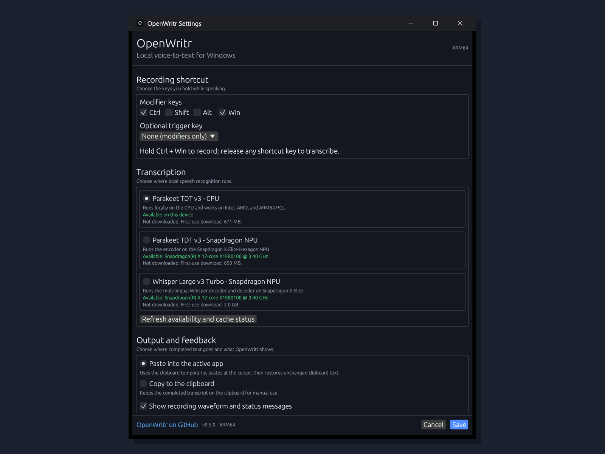

Push-to-talk voice typing for Windows. Hold a key, speak, release — your words land at the cursor. Fully local, on the NPU.
One click, auto-updates, both architectures · or download directly · MIT licensed
OpenWritr isn't an app you switch to — it's a tray utility that types for you, into whatever window already has focus. Email, chat, your editor, a browser field. Hold the hotkey, talk, let go.
Speech recognition runs on your device. Your audio never leaves the machine. No account, no analytics, nothing phoned home.
On Snapdragon X the model runs on the Hexagon NPU — a 5-second sentence transcribes in well under half a second, sipping power.
English, German, French, Spanish, Italian, Dutch, Polish, Ukrainian and more — auto-detected, with punctuation and capitalization.
A global low-level keyboard hook means recording survives popups, UAC prompts and system shortcuts stealing focus mid-sentence.
Hold Shift too and an LLM tidies punctuation and grammar — via your own GitHub Copilot or OpenAI-compatible key. Off by default.
MIT-licensed, native Rust, no Electron. A single ~7 MB executable. Every release built reproducibly in public CI.
A subtle overlay with a live level meter appears only while you record. Everything else is one tray icon and a settings dialog.

Press → speak → release. Four stages, all on your machine.
Default Ctrl+Win. A global hook captures the keystroke no matter what's focused; the mic opens.
Audio is downmixed to 16 kHz mono and turned into mel features — locally, in real time.
The Parakeet encoder runs on the NPU (or CPU); a transducer decoder turns features into text.
The result is pasted at your cursor. Optionally polished by an LLM first.
The interesting engineering. NVIDIA's Parakeet is a great speech model — but nothing about it was built to run on a Qualcomm NPU. Here's what it took.
Parakeet's encoder builds its attention mask dynamically at runtime (Shape → Gather → Range → Expand). The Hexagon HTP backend can't trace through that — it bails out every time. We constant-folded that subgraph against a fixed 8-second audio window, freezing the input shapes so the whole graph becomes static and compilable.
The 600M-parameter encoder was quantized to INT8 weights / INT16 activations — the recipe the HTP wants for transformer-style nets — calibrated on real multilingual speech (FLEURS), then compiled to a Qualcomm AI Hub QNN context binary targeting the Snapdragon X Elite.
The compiled binary loads through ONNX Runtime's QNN execution provider. The high-level Rust bindings crashed on this particular model, so OpenWritr calls the ONNX Runtime C API directly through a thin FFI layer — the exact call sequence that works from Python, reproduced in native Rust.
The compiled encoder takes a fixed 8-second window. Longer dictation is run in overlapping chunks and the encoder features are stitched back together at the seams, so the decoder runs once over the whole stream — no doubled or dropped words at the boundaries.
The result is published as an open model on Hugging Face, and the entire toolchain (graph surgery, AI Hub submission, wrapper, validator) ships in the repo.
Measured on a Snapdragon X Elite (X1E80100). Decode is the full pipeline: preprocess + encode + transducer decode.
| Audio length | Decode time | × Realtime | NPU chunks |
|---|---|---|---|
| 3 s | 128 ms | 23× | 1 |
| 5.8 s | 221 ms | 26× | 1 |
| 16.4 s | 375 ms | 44× | 3 |
| 23.0 s | 626 ms | 37× | 4 |
The encoder itself runs in ~67 ms per 8-second window on the NPU. The x64 build runs the same pipeline on the CPU at roughly 25× realtime.
The Microsoft Store is the easiest way — one click, it picks the right build for your CPU automatically, and it keeps itself updated. No SmartScreen warning.
Prefer a direct download? Pick your CPU — both are per-user installs, no admin needed. (Settings → System → About → "System type" if you're unsure.)
Direct-download binaries aren't code-signed, so Windows SmartScreen shows a warning on first launch — click More info → Run anyway, or just use the Store. Checksums are attached to every release.